Der Vater
Ordan
Domäne: Zeit
Vergangenheit, Gegenwart und Zukunft im Gefüge der göttlichen Ordnung.
Zauber & Ausprägungen noch offen
Alerias Überlieferungen Die arkane Kunst
Eine Kraft durchzieht alles. Manche erlernen ihre Sprache, andere folgen ihrem Fluss — und wieder andere binden ihr Schicksal an jene, die sie gewähren.
Den Codex aufschlagenDrei Zugänge · Elf Schulen · Sieben Druidenwege
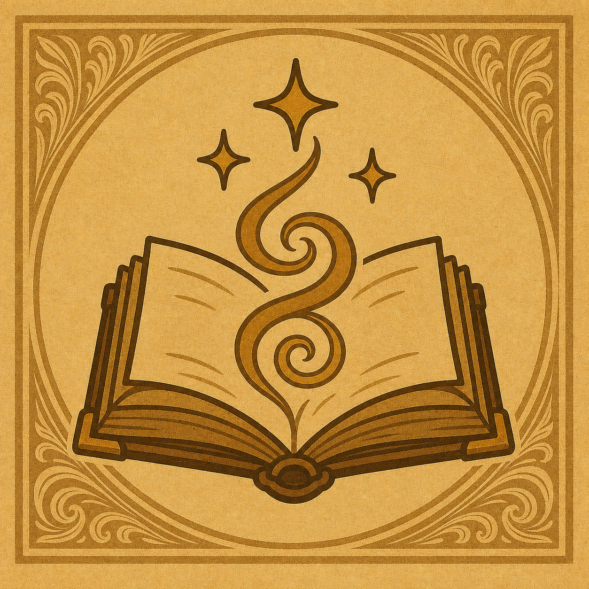
Studium. Verbundenheit. Hingabe.
Drei Wege zu derselben allgegenwärtigen Kraft.
Eine gemeinsame Essenz
Magie studieren, Formeln begreifen und eine Kunst durch Übung meistern.
Den Schulen folgen ↗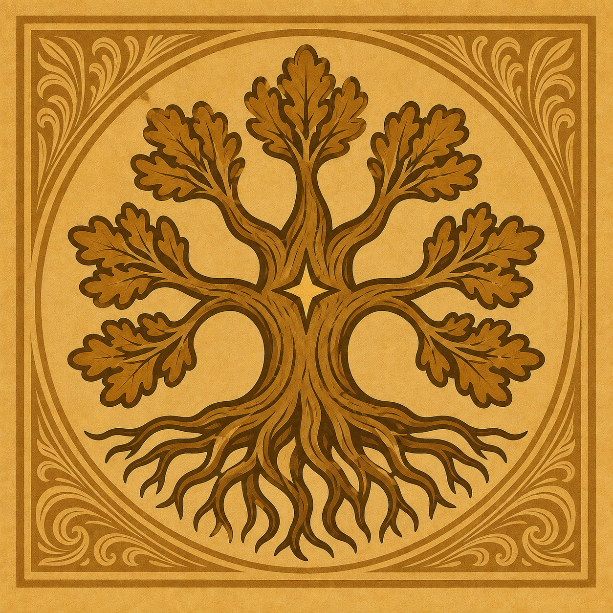
In der Natur wurzeln und ihre Zusammenhänge in sieben Richtungen entfalten.
Die Wurzeln erkunden ↗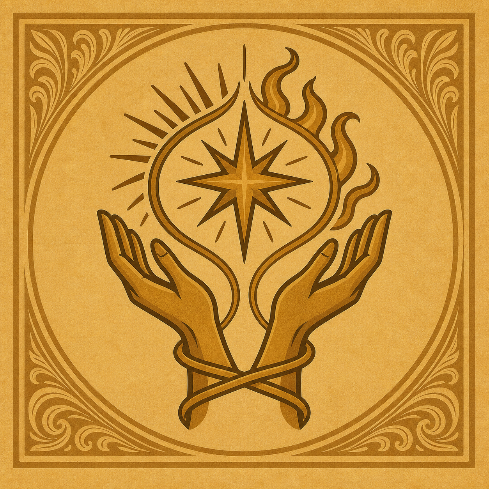
Eine Macht anrufen und durch Gunst, Eid oder Opfer über sich hinauswachsen.
Der Bindung nachgehen ↗Die Grundlage aller Künste
Magie gehört zur Welt, lange bevor ein Mensch ihr einen Namen gibt.
Sie durchzieht Lebewesen und Gestein, Meere und Gestirne, die sichtbare Welt und die Leere zwischen den Sternen. Die Kulturen Alerias nennen sie die Kunst, die Arkane oder ätherische Macht. Wer sie wirkt, gibt dieser allgegenwärtigen Kraft eine Richtung.
Mana bezeichnet die magische Essenz, die dafür zur Verfügung steht. Magicka, Odem und Chakra sind andere überlieferte Namen derselben Essenz. Sie kann im Wirker liegen, in einem Gegenstand gespeichert sein oder durch eine Bindung bereitgestellt werden.
Die frühen menschlichen Zauberer gingen aus der Beschäftigung mit der druidischen Urmagie hervor. Sie sammelten deren Zeichen und Riten, untersuchten sie und überführten ihr Wissen in Formeln, Orden und Akademien. So entstanden die gelehrten Schulen.
Magisches Potenzial allein bedeutet noch keine Meisterschaft. Studium braucht Disziplin und Übung; die Druidenkunst verlangt Verbundenheit und Verständnis; eine verliehene Gabe bringt die Bedingungen ihrer Bindung mit sich.
Das Register der Künste
Jeder Eintrag öffnet ein Blatt über Wesen, Anwendung und Zusammenhänge seiner Kunst.
Zu dieser Suche ist kein Blatt verzeichnet. Versucht einen anderen Begriff oder setzt die Suche zurück.
Wissen · Disziplin · Übung
Die Menschen teilen das Erlernbare in Schulen ein. Jede Schule betrachtet einen bestimmten Aspekt derselben Kraft.
Magier und Zauberer erschließen sich diese Gebiete durch Studium und Praxis. Ihre Grundlagen lassen sich vermitteln; ihre Meisterschaft kann Jahrzehnte oder Jahrhunderte beanspruchen. Eine Spezialisierung vertieft einen Teilbereich, während ein Zweig mehrere Schulen miteinander verbindet. Orden und Akademien bewahren solche Lehrtraditionen.
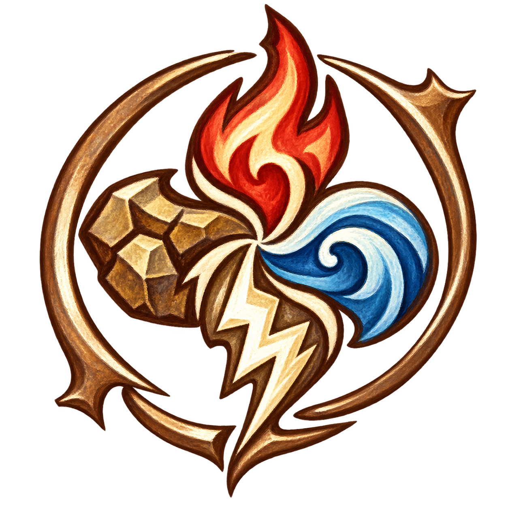
01 · Gelehrte SchuleElementeDie Kräfte der stofflichen Welt+Feuer und Wasser, Erde und Wind, Frost, Blitz und Donner werden gelenkt, geformt oder entfesselt. Die Schule umfasst mehr als Zerstörung: Auch ein behutsam gelenkter Luftstrom ist Elementarmagie.
Vertiefungen: etwa Pyromantie oder die Beherrschung von Wasser und Gewitter. Ein Element zu meistern verlangt mehr als das Erlernen eines einzelnen Schadenszaubers.
 02 · Gelehrte SchuleRestitutionHeilen und Wiederherstellen+
02 · Gelehrte SchuleRestitutionHeilen und Wiederherstellen+Die Kunst der Wiederherstellung richtet sich auf Verletzung, Erschöpfung und gestörte Lebenskraft. Sie versucht, einen beeinträchtigten Zustand zu erneuern oder zu stabilisieren.
Heilung begegnet auch in der Naturmagie und in sakralen Gaben. Eine ähnliche Wirkung kann auf verschiedenen Wegen entstehen; ein Heilzauber ist deshalb nicht zwangsläufig göttlich.
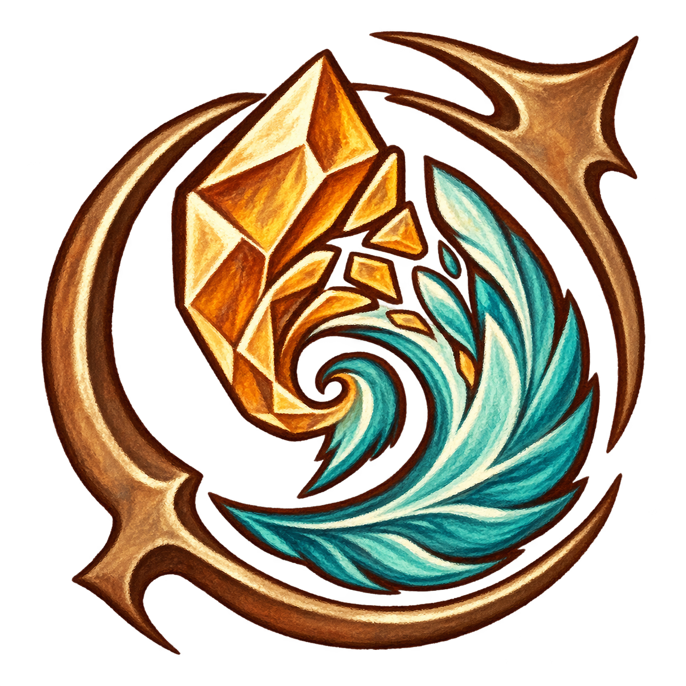
03 · Gelehrte SchuleVerwandlungGestalt und Eigenschaften verändern+Verwandlung beschäftigt sich mit Form und Beschaffenheit. Sie verändert die Eigenschaften eines Körpers oder Gegenstands und untersucht, wie sich Materie magisch umgestalten lässt.
Sie berührt die druidische Transmutation, betrachtet den Wandel jedoch als gezielt erlernbare Disziplin.
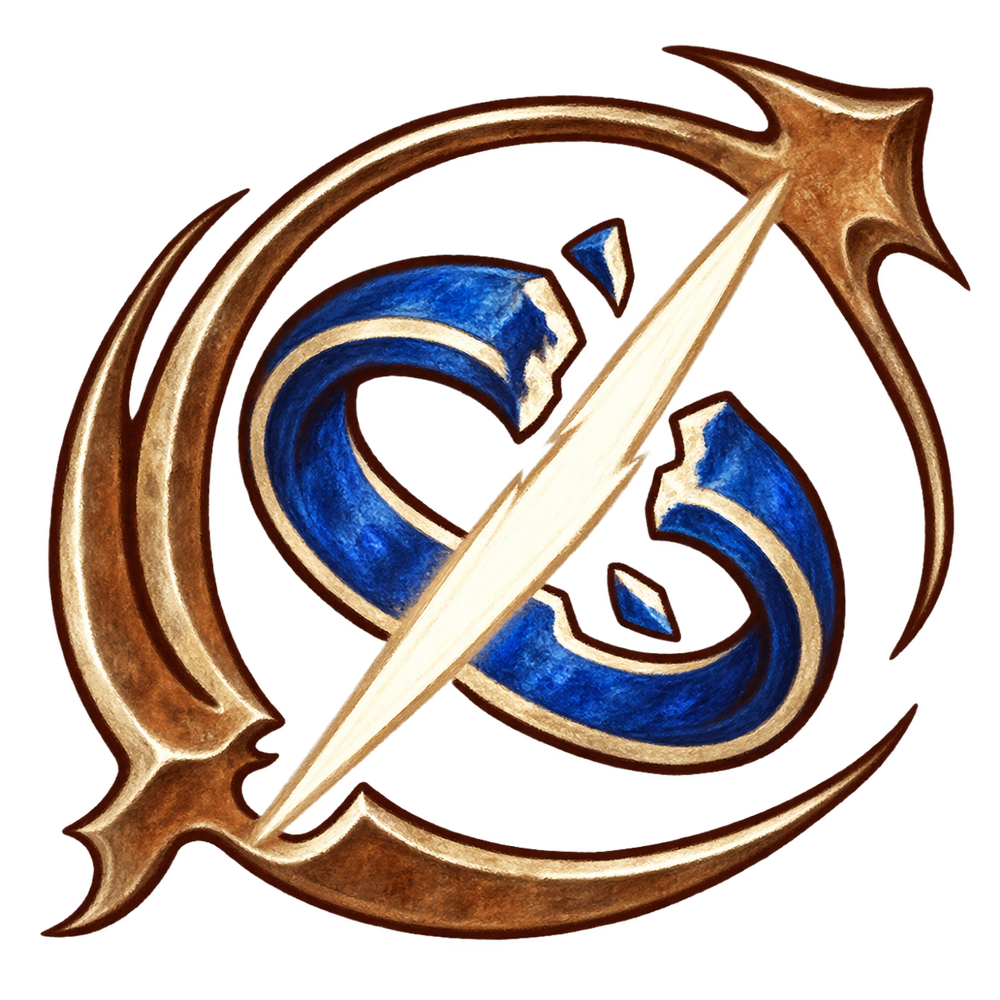
04 · Gelehrte SchuleEntzauberungMagische Wirkungen lösen+Entzauberung untersucht bestehende magische Gefüge, um sie zu unterbrechen, zu lösen oder zu bannen. Wer einen Zauber aufheben will, muss dessen Bindung und Widerstand verstehen.
Das Auflösen einer Wirkung ist eine andere Aufgabe als das Herstellen einer Verzauberung. Beide Künste ergänzen einander im Umgang mit Artefakten und Flüchen.
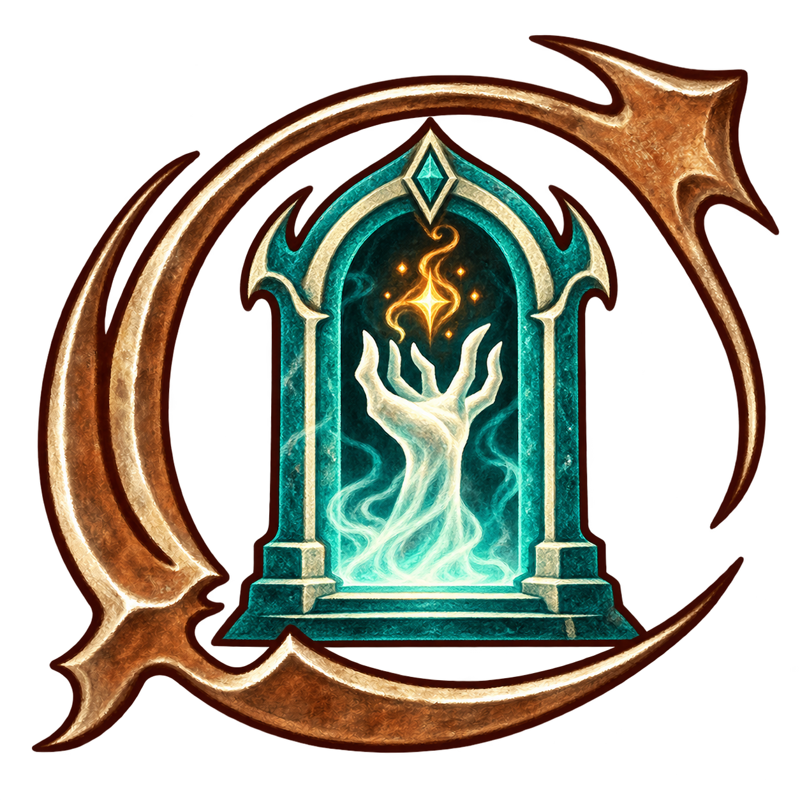
05 · Gelehrte SchuleBeschwörungRufen, Herbeiholen und Binden+Diese Schule widmet sich dem Herbeirufen von Wesen oder magischen Erscheinungen und den Bedingungen ihrer Anwesenheit. Rufen und Beherrschen sind dabei unterschiedliche Aufgaben.
Eine Beschwörung begründet für sich allein noch keinen Pakt. Ob ein gerufenes Wesen gehorcht, verhandelt oder widersteht, hängt von der konkreten Bindung ab.
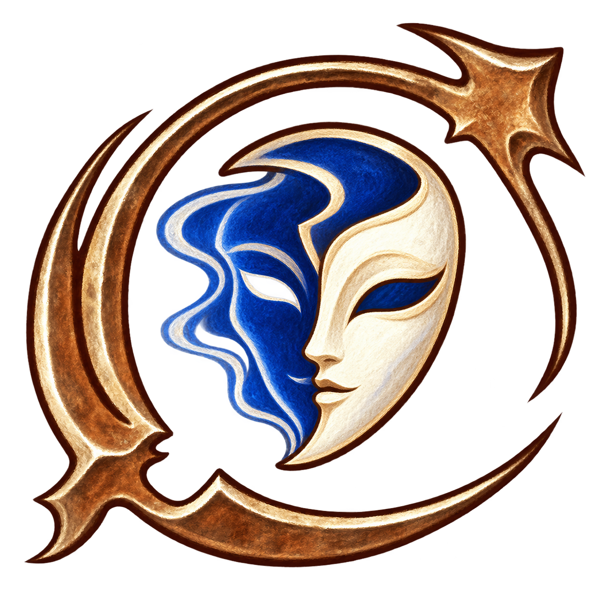
06 · Gelehrte SchuleIllusionDen Sinnen eine andere Welt zeigen+Illusionen verändern, was wahrgenommen wird: Bilder, Geräusche, Sichtbarkeit oder den Eindruck einer Umgebung. Ihr Gegenstand ist die Erscheinung der Dinge.
Wo die Illusion die Sinne täuscht, richtet sich die Bezauberung unmittelbar auf Empfindung und Willen.
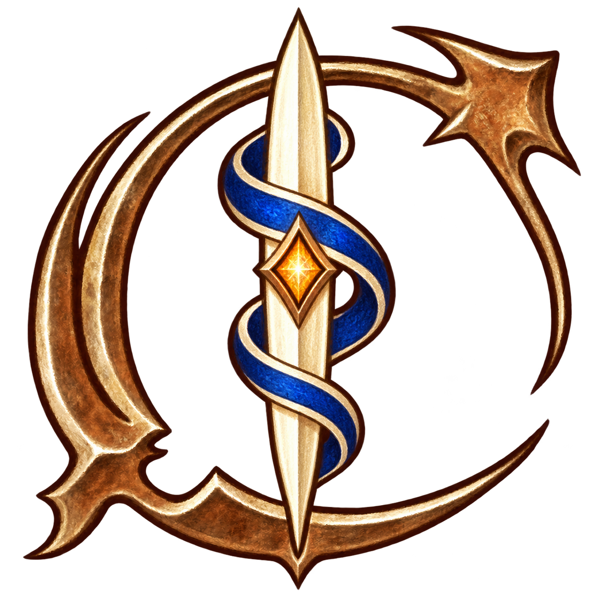
07 · Gelehrte SchuleVerzauberungDie Kunst in einen Träger binden+Verzauberer erschaffen, verwenden und laden magische Gegenstände. Sie verbinden eine Formel mit ihrem Träger und einer geeigneten Quelle. Erfahrung erlaubt ihnen, die gespeicherte Kraft besser zu nutzen und wieder zuzuführen.
Eine eingeritzte Rune allein macht noch kein dauerhaftes Artefakt. Formel, handwerkliche Ausführung und Versorgung müssen zusammenpassen.
Über Runen und magische Gegenstände →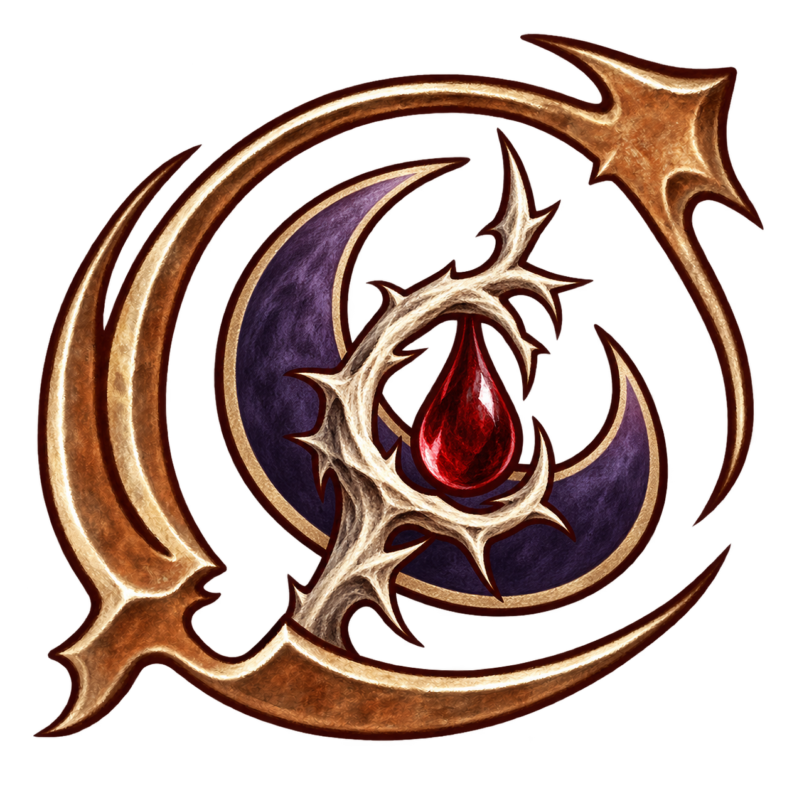
08 · Gelehrte SchuleSchwarze MagieFluch, Entzug und Verderben+Unter diesem Namen sammeln die Gelehrten Künste, die Lebenskraft schwächen, verderben oder gegen ihren ursprünglichen Zusammenhang wenden. Ihr Ruf hängt auch von den Verboten und Wertungen einer Kultur ab.
Die erlernbare Beschäftigung mit Flüchen oder Tod ist von einer besonderen infernalen Gabe zu unterscheiden. Helas Nekromantie erschließt sich in ihrer eigenen Tiefe erst durch die Bindung an ihre Macht.
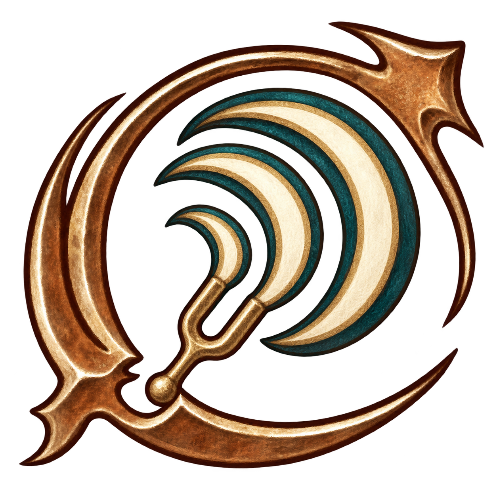
09 · Gelehrte SchuleTöneKlang, Stimme und Resonanz+Die Schule der Töne beschäftigt sich mit Klang als Träger und Gegenstand von Magie. Stimme, Rhythmus, Musik und Stille können eine Wirkung formen oder vermitteln.
Sie besitzt Berührungspunkte zu bardischen Traditionen. Ein Lied kann mehrere Künste verbinden, etwa Klang mit Bezauberung oder Illusion.
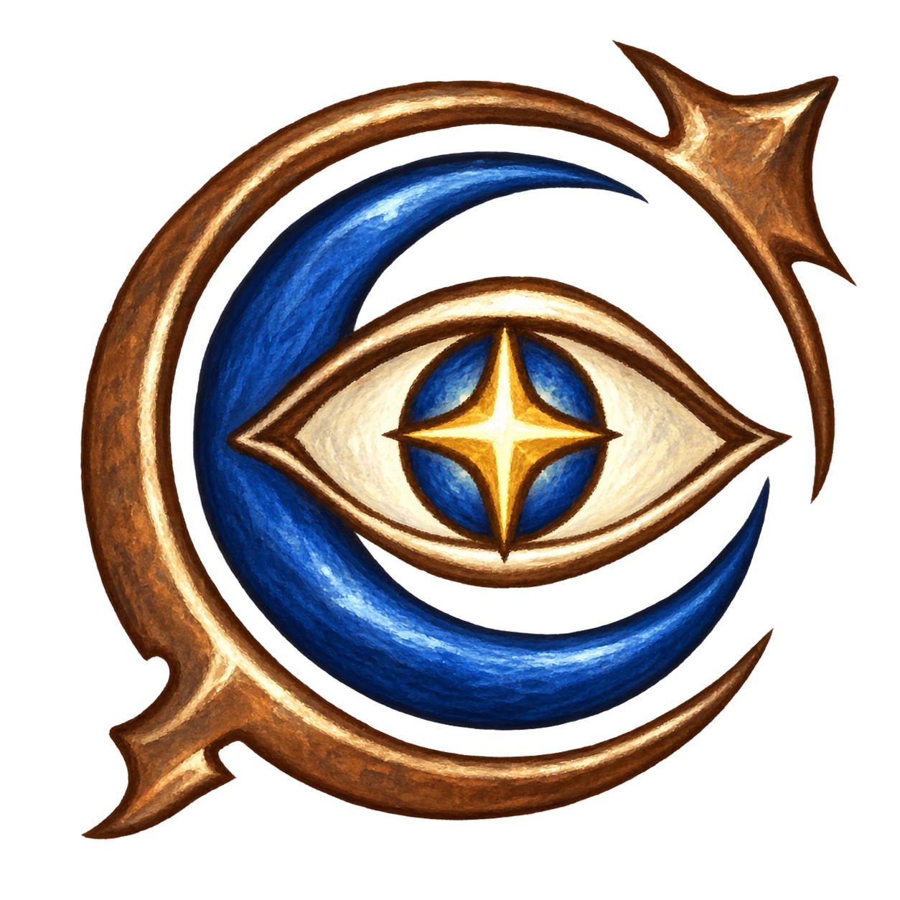
10 · Gelehrte SchuleErkenntnisDas Verborgene wahrnehmen+Erkenntnis erweitert Wahrnehmung und Verständnis. Sie sucht Spuren, erschließt verborgene Zusammenhänge und untersucht das, was gewöhnlichen Sinnen entgeht.
Eine magische Wahrnehmung muss gedeutet werden. Ihr Umfang und ihre Verlässlichkeit hängen von der jeweiligen Kunst ab; Einsicht bedeutet keine Allwissenheit.
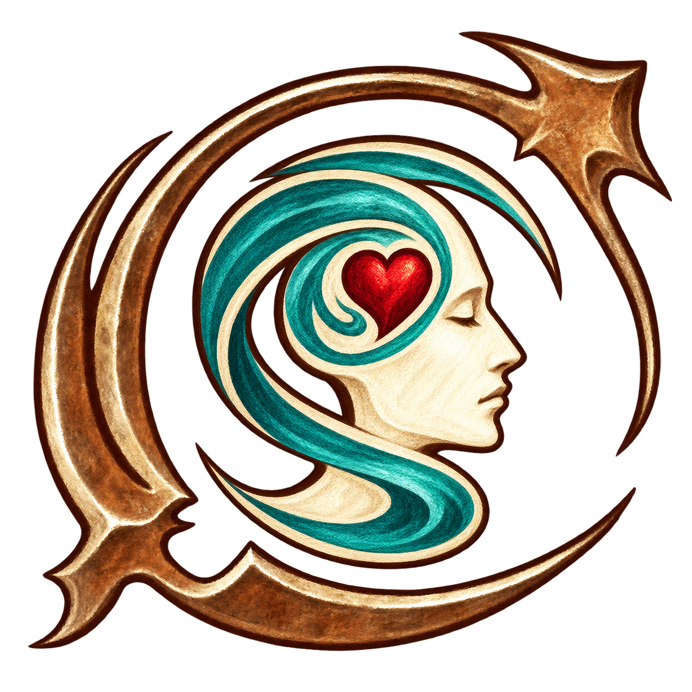
11 · Gelehrte SchuleBezauberungEmpfindung und Willen berühren+Bezauberung richtet Magie auf Gefühle, Aufmerksamkeit und Willen. Sie kann besänftigen, Furcht wecken oder eine Haltung beeinflussen.
Bezauberung betrifft ein empfindendes Gegenüber. Verzauberung bindet einen Zauber in einen Träger. Trotz ihrer ähnlichen Namen haben die beiden Schulen unterschiedliche Aufgaben.
Die Schulen sind eine menschliche Ordnung des Wissens. Ihre Grenzen überschneiden sich, und aus ihrer Verbindung entstehen neue Zweige.
Wurzeln · Wandel · Gleichgewicht
Das gemeinsame Fundament
Jeder druidische Weg wurzelt in der Naturmagie: in der Verbundenheit mit Leben, Wachstum, Verfall und den Kräften der Welt. Natur umfasst hier mehr als Wald und Pflanzen — auch Tiere, Elemente und die größeren Zusammenhänge des Daseins gehören dazu.
Die sieben Ausrichtungen entfalten dieses Fundament. Sie sind weiter gefasst als die einzelnen Lehrfächer menschlicher Magier und können Wirkungen umfassen, die mehrere Schulen berühren. Eine breitere Sicht ist jedoch keine automatische Überlegenheit jedes einzelnen Zaubers.
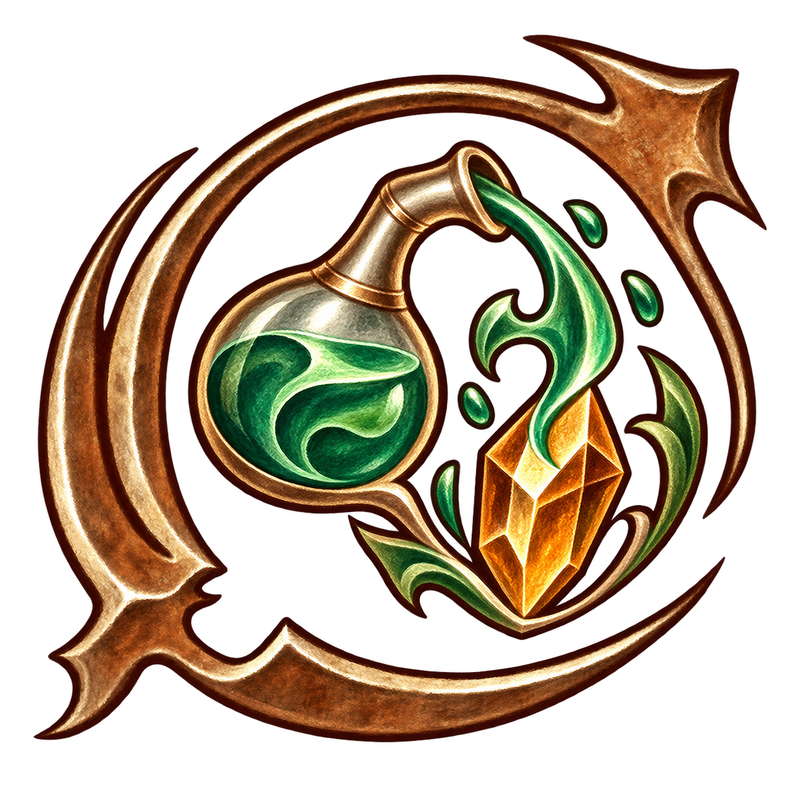
01 · Ausrichtung der NaturmagieTransmutationAlchemie · Das Werden der Stoffe+Transmutation betrachtet den Wandel von Stoffen und ihren Eigenschaften als Teil natürlicher Prozesse. Sie verbindet die Kenntnis von Substanzen mit der Kraft, ihre Veränderung zu begleiten oder zu bewirken.
Ihr alchemistischer Blick berührt Verwandlung, Restitution und die Kräfte der Elemente, ohne auf eines dieser gelehrten Fächer beschränkt zu sein.
Die Astralmagie richtet sich auf Gestirne, kosmische Zusammenhänge und die unsichtbaren Verbindungen der Welt. Auch das Ferne gehört zur Natur, in der der Druide wurzelt.
Sie berührt Erkenntnis und die Wahrnehmung astraler Kräfte. Eine natürliche Beziehung zu den Gestirnen ist dabei von einer durch eine Gottheit gewährten Domäne zu unterscheiden.
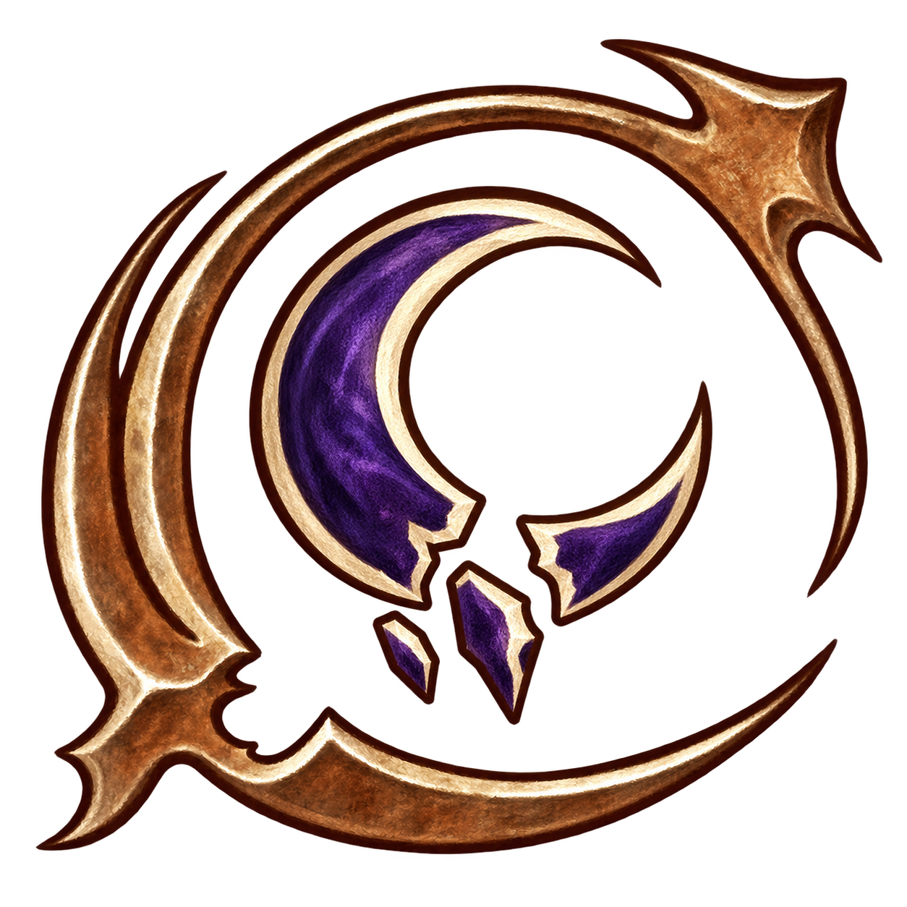
03 · Ausrichtung der NaturmagieNihilomantieLeere · Wo etwas weicht+Nihilomantie widmet sich der Leere, dem Ausbleiben und der Auflösung. Sie betrachtet auch das Verschwinden als Teil der Welt und ihrer Kreisläufe.
Sie kann Berührungspunkte zu Entzauberung und Wandel besitzen. Ihre natürliche Ausrichtung auf die Leere setzt für sich genommen keinen infernalen Pakt voraus.
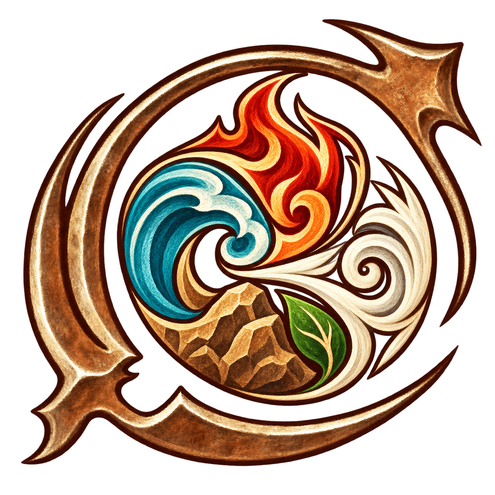
04 · Ausrichtung der NaturmagieElementarismusElementar · Die Welt in Bewegung+Elementarismus erschließt die Elemente als zusammenhängende Kräfte: das Wasser im Kreislauf, den Wind im Wetter, das Feuer in Erneuerung und Zerstörung, die Erde als tragenden Grund.
Wo die gelehrte Elementarschule einzelne Wirkungen systematisiert, betrachtet dieser Druidenweg auch ihr Zusammenspiel in der lebendigen Welt.
Zum Zauberverzeichnis ? 72 Zauber ?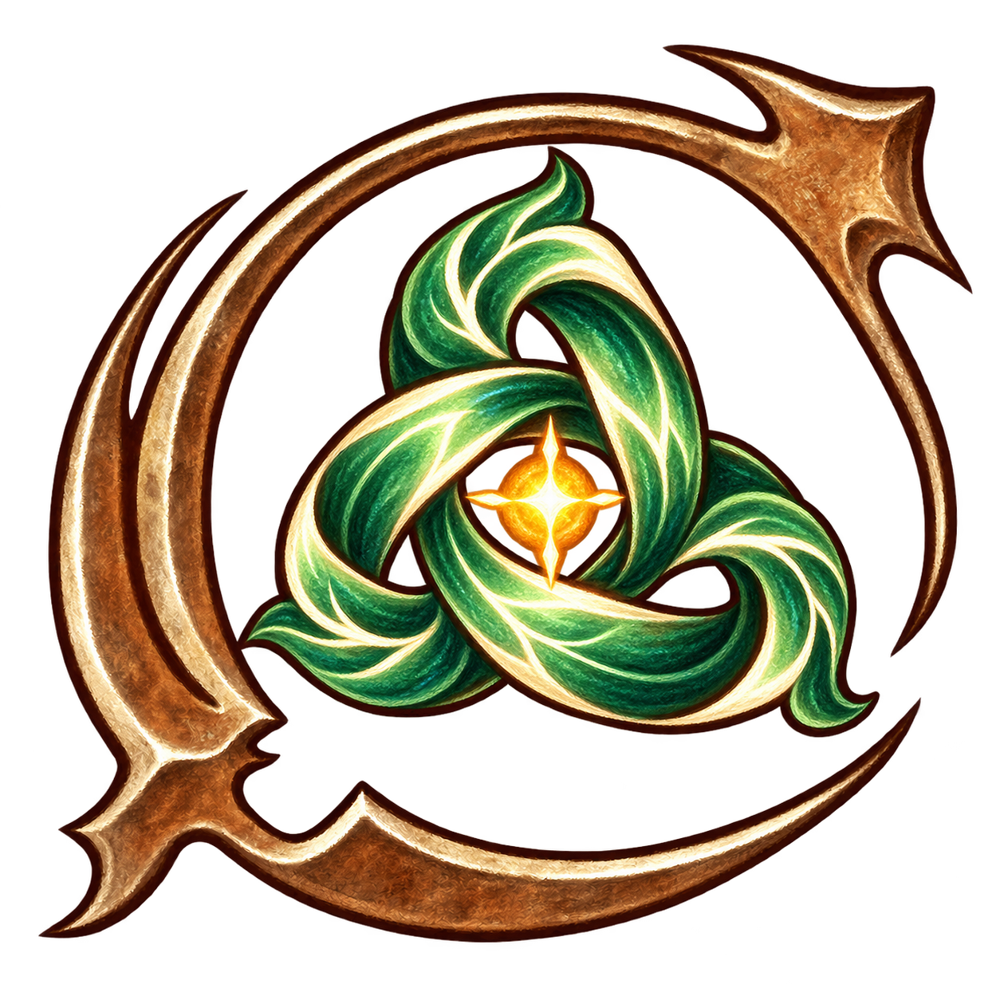
05 · Ausrichtung der NaturmagieThaumaturgieMagie · Die Kraft selbst berühren+Thaumaturgie nimmt das magische Gefüge selbst in den Blick: seine Strömungen, Bindungen und Wechselwirkungen. Mana ist auch hier Teil der Natur.
Dieser Weg berührt die Wahrnehmung, Lenkung und Bindung magischer Kräfte und damit Gebiete, die Gelehrte unter Erkenntnis, Verzauberung oder Entzauberung betrachten.
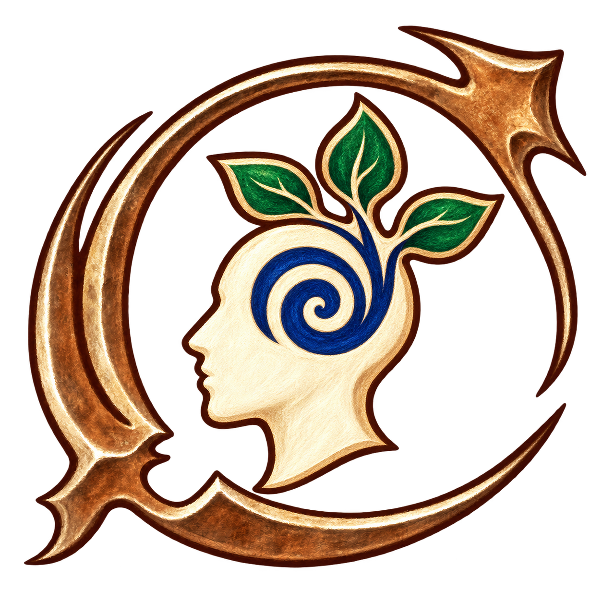
06 · Ausrichtung der NaturmagieCogniturgieGeist · Die innere Welt+Cogniturgie wendet sich dem Geist, seiner Wahrnehmung und seinem Verhältnis zur Welt zu. Bewusstsein wird als Teil des natürlichen Zusammenhangs verstanden.
Sie berührt Erkenntnis, Illusion und Bezauberung, betrachtet jedoch die Verbindungen zwischen Empfindung, Vorstellung und Willen gemeinsam.
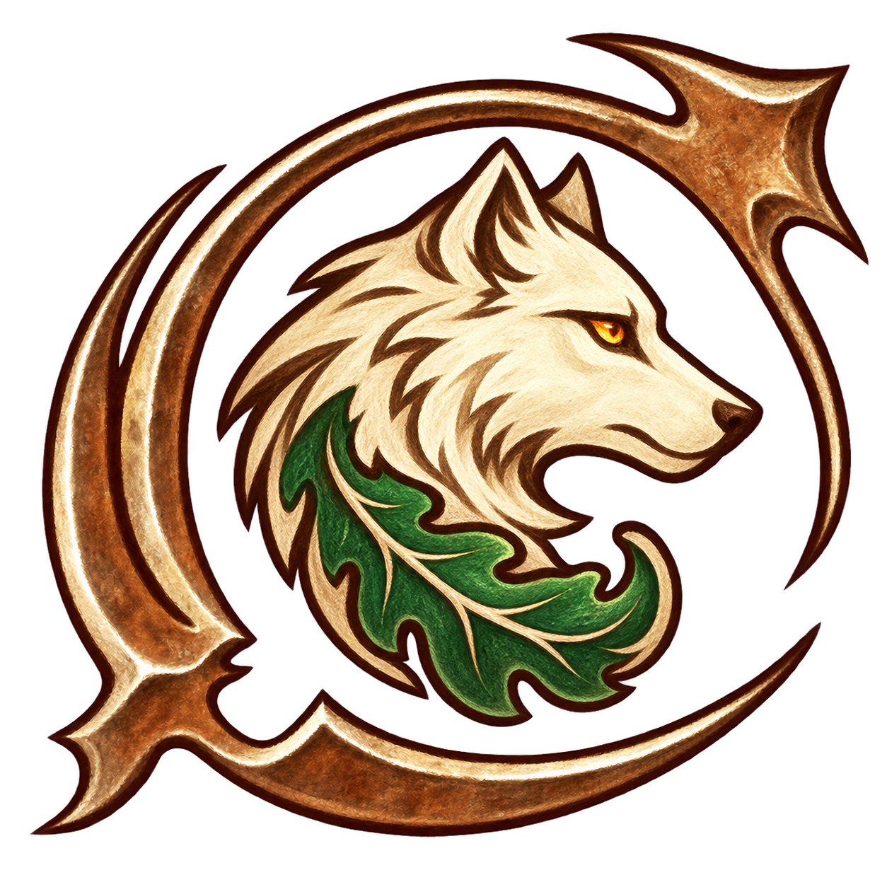
07 · Ausrichtung der NaturmagieZoanthurgieTier · Das Leben der Wildnis+Zoanthurgie beschäftigt sich mit tierischem Leben, seinen Instinkten und Gestalten. Sie vertieft die Verbundenheit zwischen Druide und Tierwelt.
Verständigung, Wahrnehmung und tierischer Gestaltwandel können sich hier berühren. Damit reicht der Weg über eine bloße Verwandlungstechnik hinaus.
Gunst · Hingabe · Opfer
Eine Verbindung eröffnet neue Wege
Auch diese Magie wirkt mit der Essenz, die Druiden und Zauberer berühren. Ihre Besonderheit liegt in Richtungen, die sich allein durch eine göttliche oder infernale Verbindung erschließen. Ihr Anfang kann so unscheinbar sein wie der jeder anderen Kunst.
Mit wachsender Gunst, vertiefter Bindung und den eingegangenen Opfern kann sich ihre Macht nahezu ins Unermessliche steigern. Darin liegt ihr gewaltiges Potenzial — und ihre Abhängigkeit. Was gewährt wird und welchen Preis es fordert, ergibt sich aus der jeweiligen Verbindung.
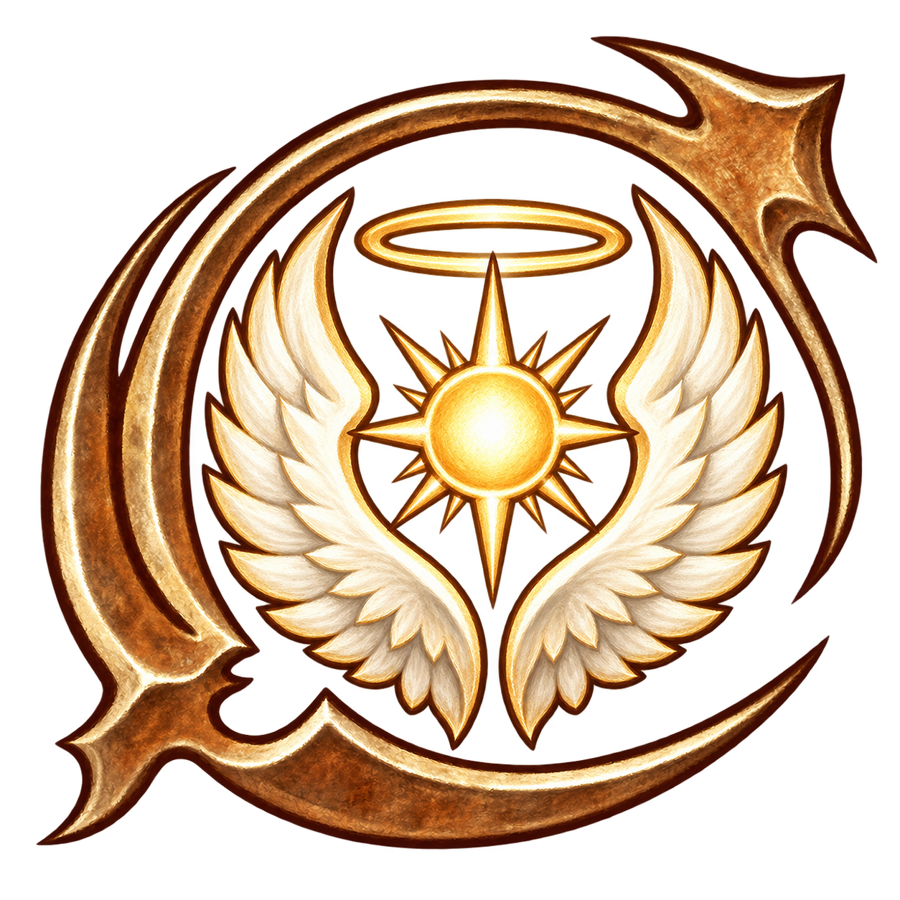
Göttliche VerbindungSakrale MagieDie Gabe der verehrten Macht+Priester, Kleriker und Jünger wirken in der Verbindung mit einer verehrten Gottheit. Gunst kann an Tugenden, einen Eid, Dienste oder die Erfüllung eines göttlichen Auftrags gebunden sein.
Die gewährte Kunst folgt dem Wesen ihrer Gottheit. Schutz und Heilung sind mögliche Wirkungen; die sakrale Magie erschöpft sich nicht darin.
Die Neun Göttlichen →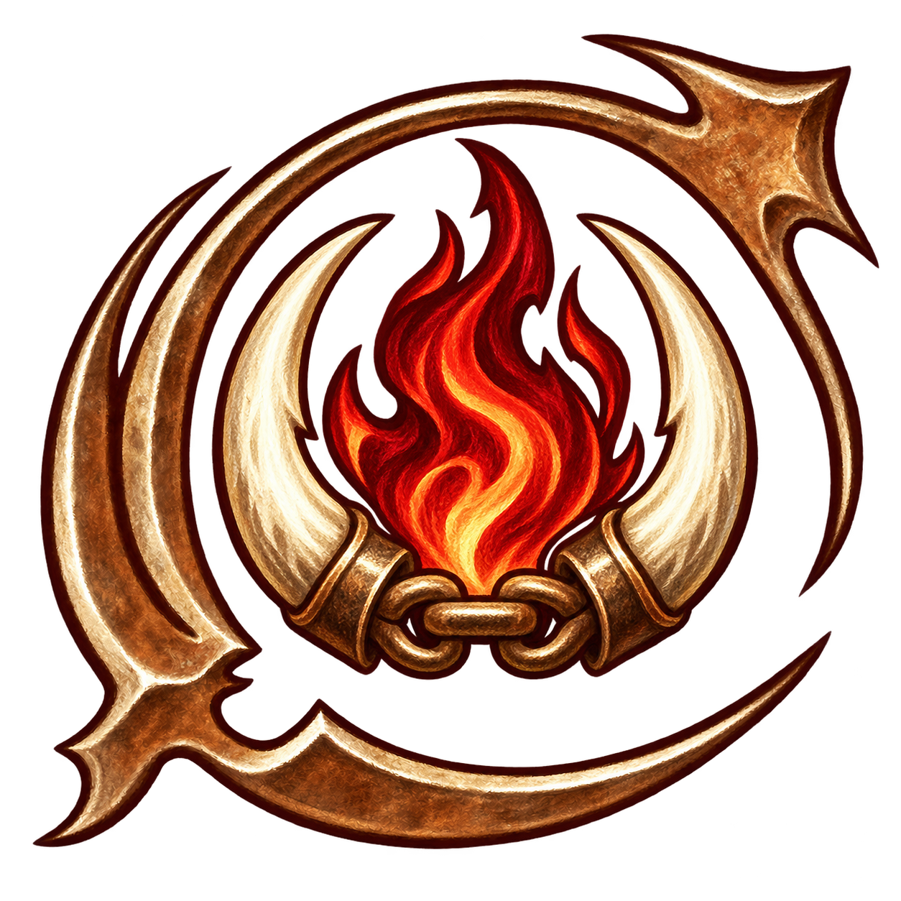
Infernale VerbindungInfernale MagieDie Kraft des eingegangenen Preises+Infernale Verbindungen eröffnen Gaben, die an das Wesen und die Absichten des Patrons gebunden sind. Ein Paktträger kann Macht empfangen, ohne den Weg einer Akademie durchlaufen zu haben.
Dienste, Opfer, Einfluss auf den Willen oder eine Seelenbindung können Teil der Vereinbarung sein. Nicht jede Bindung fordert denselben Preis; entscheidend sind ihre tatsächlichen Bedingungen.
Infernus und seine Mächte →Jede der hier verzeichneten Mächte trägt eine eigene magische Domäne. Die Zuordnung folgt ihrem Wesen und ihren Überlieferungen. Die einzelnen Zauber und Ausprägungen bleiben vorerst offen.
Der Vater
Domäne: Zeit
Vergangenheit, Gegenwart und Zukunft im Gefüge der göttlichen Ordnung.
Zauber & Ausprägungen noch offen
Die Mutter
Domäne: Barmherzigkeit
Liebe, Fürsorge und die heilende Zuwendung der Mutter.
Zauber & Ausprägungen noch offen
Der Streiter
Domäne: Ehrenvoller Krieg
Wehrhaftigkeit, Pflichterfüllung und die Treue des Streiters.
Zauber & Ausprägungen noch offen
Der Templer
Domäne: Göttliches Urteil
Gerechtigkeit, Weihe und Gnade im Zeichen des Templers.
Zauber & Ausprägungen noch offen
Die Hirtin
Domäne: Lebendige Verbundenheit
Das Band zwischen Natur, Tieren und ihren Hütern.
Zauber & Ausprägungen noch offen
Die Maid
Domäne: Inspiration
Musik, Kunst und Liebe als Ausdruck schöpferischer Empfindung.
Zauber & Ausprägungen noch offen
Der Knecht
Domäne: Fruchtbare Erde
Die Verbindung von Erde, redlicher Arbeit und dem Ertrag des Fleißes.
Zauber & Ausprägungen noch offen
Der Mentor
Domäne: Arkane Wahrheit
Magie, Erkenntnis und die Bewahrung wahrhaftigen Wissens.
Zauber & Ausprägungen noch offen
Der Hüter
Domäne: Seelengeleit
Der Übergang zwischen Leben und Tod und die Ruhe der Seelen.
Zauber & Ausprägungen noch offen
Die Dame des Sees
Domäne: Reinigendes Wasser
Wasser, Reinheit und die Güte der Dame des Sees.
Zauber & Ausprägungen noch offen
Die Dame der Berge
Domäne: Beständiger Fels
Erde, Gestein und die unerschütterliche Kraft der Berge.
Zauber & Ausprägungen noch offen
Der Herr der Winde
Domäne: Freier Wind
Luft, Bewegung und der freie Ausdruck der eigenen Stimme.
Zauber & Ausprägungen noch offen
Der Herr der Wolken
Domäne: Gewitter
Blitz und Donner im gemeinsamen Wirken der himmlischen Kräfte.
Zauber & Ausprägungen noch offen
Der Herr der Flammen
Domäne: Erneuernde Flamme
Feuer, Leidenschaft und der Wandel durch Erneuerung.
Zauber & Ausprägungen noch offen
Die Seemaid
Domäne: Entdeckung
Aufbruch, Neugier und die Begegnung mit dem Unbekannten.
Zauber & Ausprägungen noch offen
Die Glücksbringerin
Domäne: Glück
Günstige Fügung, Fröhlichkeit und mitfühlende Zuversicht.
Zauber & Ausprägungen noch offen
Der Erbauer
Domäne: Schöpfendes Handwerk
Erfindung, Baukunst und die Verantwortung des Erbauers.
Zauber & Ausprägungen noch offen
Der Herausforderer
Domäne: Wettstreit
Bewährung, Herausforderung und der Auftrag der Herolde.
Zauber & Ausprägungen noch offen
Der Mystiker
Domäne: Mystik
Die verborgenen Zusammenhänge von Magie und Zauberei.
Zauber & Ausprägungen noch offen
Der Usurpator
Domäne: Infernale Herrschaft
Dominanz und Auflehnung, getragen von Stolz und infernalem Feuer.
Zauber & Ausprägungen noch offen
Die Witwe
Domäne: Zwielicht
Magie und Schicksal im Schleier kosmischer Geheimnisse.
Zauber & Ausprägungen noch offen
Der Plünderer
Domäne: Entfesselter Zorn
Die Wildheit des Krieges und die zügellose Herrschaft des Stärkeren.
Zauber & Ausprägungen noch offen
Der Schänder
Domäne: Blut und Seelen
Entweihung, Unterwerfung und die Bindung von Lebenskraft.
Zauber & Ausprägungen noch offen
Der Jäger
Domäne: Wilde Jagd
Jagdtrieb, tierische Gestalt und die Bewährung in der Wildnis.
Zauber & Ausprägungen noch offen
Der Hedonist
Domäne: Ekstase
Verführung, Ausschweifung und das maßlose Verlangen nach Genuss.
Zauber & Ausprägungen noch offen
Die Nachtmaid
Domäne: Schatten
Nacht, verborgene Wege und die Geheimnisse der Dunkelheit.
Zauber & Ausprägungen noch offen
Der Ketzer
Domäne: Weltenbruch
Zweifel, Rebellion und die Rätsel des Großen Spalts.
Adar steht im infernalen Register, bleibt als kosmische Entität jedoch außerhalb einer eindeutigen Zuordnung.
Zauber & Ausprägungen noch offen
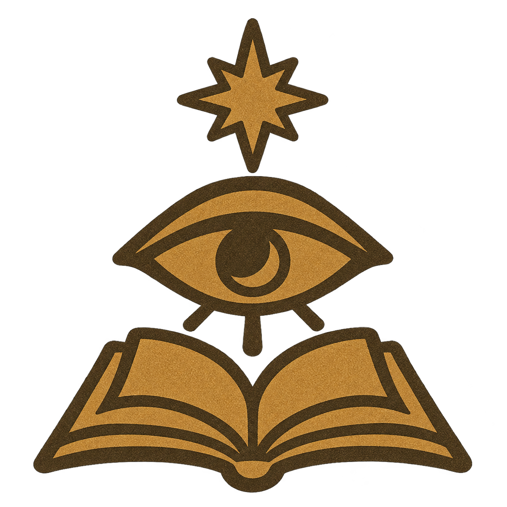
Der Intrigant
Domäne: Schicksalslenkung
Wissen, Sterne und Hoffnung im Geflecht verborgener Absichten.
Zauber & Ausprägungen noch offen
Die Schicksalsweberin
Domäne: Nekromantie
Tod, Zerfall und Leere an den Grenzen der Vergänglichkeit.
Zauber & Ausprägungen noch offen
Der Verschlinger
Domäne: Abgründige Tiefe
Das Grauen der Meere, der Ertrunkenen und verlorenen Seelen.
Zauber & Ausprägungen noch offen
Die Rächerin
Domäne: Vergeltung
Rache, Eifersucht und die Hinterlist eines nachtragenden Willens.
Zauber & Ausprägungen noch offen
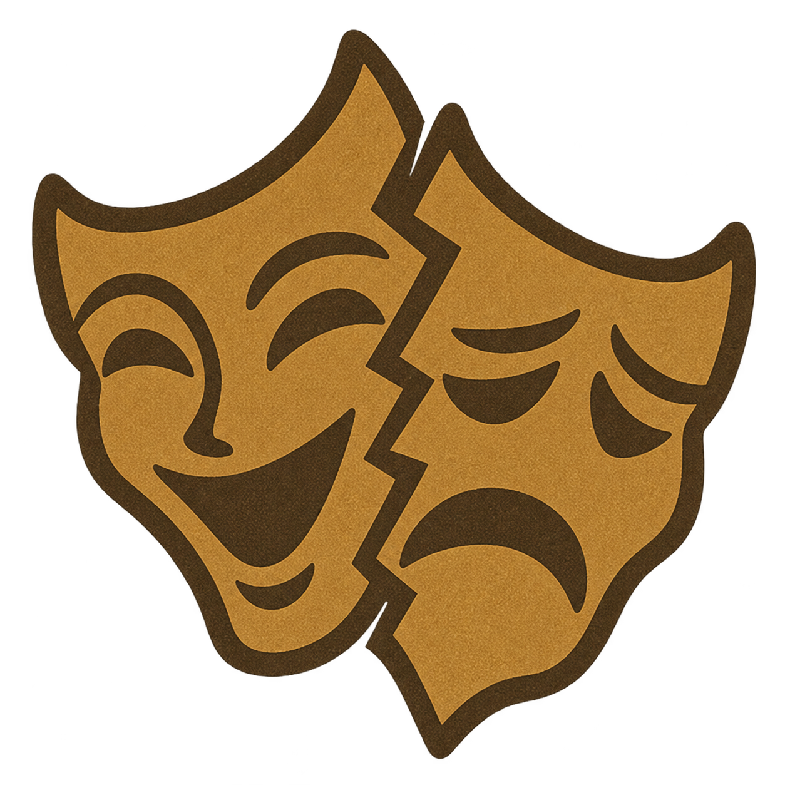
Der Zweigesichtige
Domäne: Zerrissener Geist
Die gegensätzlichen Extreme von ekstatischer Freude und tiefer Verzweiflung.
Zauber & Ausprägungen noch offen
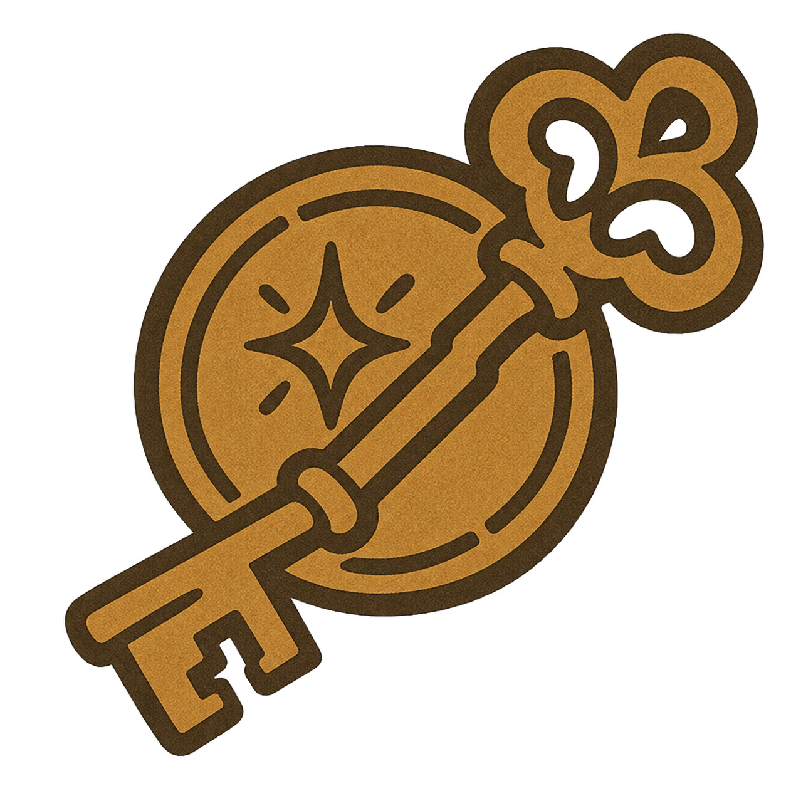
Der Trickser
Domäne: Wunschbindung
Sehnsucht und Verlockung in Vereinbarungen mit einem verborgenen Preis.
Zauber & Ausprägungen noch offen
Der Verseucher
Domäne: Pestilenz
Seuchen, Krankheit und die Ausbreitung von Verderbnis.
Zauber & Ausprägungen noch offen
Eine ähnliche Wirkung ist noch keine gleiche Gabe. Gelehrte und druidische Künste können sich mit den Wirkungsfeldern einer Domäne überschneiden. Ihre besonderen göttlichen oder infernalen Möglichkeiten erschließen sich jedoch erst durch die entsprechende Verbindung.
Formel · Träger · Quelle
Magie lässt sich niederschreiben, in Dinge binden und für einen späteren Augenblick bewahren.
Ein gespeicherter Augenblick
Eine Schriftrolle enthält einen vorbereiteten Zauber und das dafür eingespeiste Mana. Auch jemand ohne eigene magische Fähigkeiten kann sie verwenden. Sie wird einmal genutzt; die Anwendung vermittelt keine eigene magische Erfahrung oder Meisterschaft.
Der Zauber als Formel
Runen halten eine magische Formel fest. Sie können in Waffen, Amulette oder andere Träger eingearbeitet und für Rituale vorbereitet werden. Eine Formel zu aktivieren verlangt nicht immer dieselbe Kenntnis wie sie zu erschaffen.
Ohne erneuerbare Versorgung ist die eingespeiste Kraft endlich. Mit einer Quelle kann eine Runenwirkung wiederholt oder aufrechterhalten werden, solange ausreichend Energie vorhanden ist.
Bewahrtes Wissen
Ein Grimoire enthält Thesen, Studien und Formeln erfahrener Magier. Es bleibt bei der Verwendung erhalten und kann wiederholt als Grundlage dienen. Das Buch allein liefert jedoch nicht automatisch unbegrenzt Mana.
Viele Werke sind im Arkanen Alphabet, in Runenschrift oder in alten Sprachen verfasst. Ihr Inhalt erschließt sich erst mit der nötigen Kenntnis.
Handwerk trifft Zauberkunst
Die Qualität eines Artefakts hängt sowohl vom Magier als auch vom Handwerker ab. Eine sauber ausgeführte Formel, ein geeigneter Träger und eine passende Versorgung bestimmen, wie zuverlässig die Wirkung bestehen kann.
Fehlt eine externe Quelle, kann die Wirkung auf das Mana des Nutzers zurückgreifen. Unkundige können sich dadurch schwer oder sogar tödlich verausgaben.
Die Schrift hinter den Formeln
Die dreiunddreißig Zeichen der Alten Zunge verbinden Laut, Namen, magische Bedeutung und Zahlenwert. Sie gliedern sich in Körper, Geist und Seele. In der Wortschmiedekunst gehören Formen, Sprechen und Binden zusammen: Absicht und Kanalisation geben den Zeichen Kraft.
Eine Inschrift ist deshalb mehr als Schmuck — aber ihre bloße Abschrift macht noch keinen Zauberwirker.
Die Zeichentafel des Arkanen Alphabets ansehen ↗Gespeicherter Odem
Edelsteine speichern Mana und können als Katalysatoren wirken. Ihre Qualität bestimmt, wie viel Kraft sie aufnehmen können. Sie unterstützen Magier, Druiden und Paktgebundene, ohne für jeden Zauber zwingend nötig zu sein.
Eine Affinität begünstigt eine Anwendung; sie schließt andere Verwendungen nicht aus.
Macht hat eine Verbindung
Ein Pakt verbindet Möglichkeiten mit Verpflichtungen. Wer die Kraft gewährt, prägt den Handel.
Ein Magier kann einem Unkundigen vorbereitete Formeln und Runenträger überlassen und deren Wirkung mit seinem eigenen Mana speisen. Der Partner erhält einen Zugang; der Magier trägt die Belastung. Solche Pakte werden daher meist sorgfältig begrenzt.
Ein Jünger bindet sich an eine Gottheit, ihre Tugenden oder einen Eid. Gunst wird durch die Beziehung getragen. Wer ihre Bedingungen verletzt, gefährdet die gewährte Gabe; wer sie vertieft, kann größere Macht empfangen.
Ein Paktträger — auch Hexer oder Hexenmeister genannt — empfängt besondere Kräfte gegen einen vereinbarten Preis. Dienste, Opfer oder Zugeständnisse an Willen und Seele können die Bindung vertiefen. Ein Paktbuch kann Bedingungen und Verpflichtungen festhalten.
Runen, Artefakte, symbolische Handlungen, schriftliche Verträge oder gesprochene Abmachungen können einen Pakt begleiten. Die Form folgt den Beteiligten und ihrer Tradition; Reichweite, Grenzen und Folgen ergeben sich aus der Vereinbarung.
Das Eigene im Allgegenwärtigen
Die Aura gehört zur magischen Betrachtung eines Wesens. Wie sie schützt, auf Einwirkungen reagiert oder durch Fähigkeiten beeinflusst wird, richtet sich nach den jeweiligen Eigenschaften und Regeln des Wesens.
Der Zugang zu einer Schule allein bestimmt weder die Stärke einer Aura noch ihre Widerstände.
Sternzeichen werden mit persönlichen Affinitäten und Anfälligkeiten in Verbindung gebracht. Eine solche Zuordnung ist für jedes Zeichen gesondert zu betrachten.
Aus einem Sternzeichen folgt hier keine pauschale Immunität, zusätzliche Ressource oder automatische Verstärkung einer ganzen Magieschule.
Kraft · Wirkung · Verantwortung
Eine Schule beschreibt eine Kunst. Eine Schadensart beschreibt, wie eine konkrete Wirkung trifft.
Nicht jeder Zauber verletzt auf dieselbe Weise. Manche Wirkungen treffen Fleisch und Knochen, andere entziehen Lebenskraft, greifen den Geist an oder entfalten Kräfte, die sich keinem gewöhnlichen Element zuordnen lassen. Die folgenden Begriffe beschreiben diese unterschiedlichen Formen magischen Schadens.
Körper & Materie
Magie kann körperliche Verletzungen hervorrufen, ohne dass eine gewöhnliche Waffe geführt wird. Eine arkane Schneide schlägt eine Wunde, ein ätherischer Dorn durchbohrt Gewebe, eine verdichtete Kraft trifft wie ein Hammerschlag. Auch herbeigeschleuderte Steine, magisch bewegte Waffen und erschütternde Druckstöße können auf diese Weise wirken.
Entscheidend ist die Art des Treffers: Hieb trennt und schneidet, Stich konzentriert die Kraft auf eine schmale Spitze, Wucht quetscht und erschüttert. Die magische Herkunft kann dem Angriff besondere Eigenschaften verleihen, macht ihn aber nicht von selbst rüstungsdurchdringend. Ob Rüstung, Schild oder eine magische Abwehr schützen, ergibt sich aus der konkreten Wirkung.
Die Kräfte der Natur
Elementarer Schaden entsteht, wenn ein Zauber die stofflichen Kräfte der Welt gegen ein Ziel richtet. Flamme, Frost, Gewitter oder die Gewalt bewegter Erde verletzen auf unterschiedliche Weise. Was gegen eine dieser Kräfte schützt, bietet nicht automatisch Schutz gegen die anderen; die genaue Ausprägung einer Wirkung ist deshalb ebenso bedeutsam wie ihre Stärke.
Ein Element beschreibt zunächst die Erscheinung des Zaubers. Ein Stein kann Wuchtschaden verursachen, eine Eisklinge Stichschaden und ein Sturm mehrere Wirkungen verbinden. Die tatsächliche Schadenszuordnung folgt dem jeweiligen Zauber.
Tod & Verfall
Nekrotische Kraft greift die Lebenskraft eines Wesens an. Sie kann Gewebe verderben, den Körper auszehren und den natürlichen Zusammenhang zwischen Leben und Erneuerung stören. Wo sie wirkt, erscheinen Verletzungen mitunter wie vorzeitiger Verfall: blasse Haut, abgestorbene Stellen oder das Gefühl, dass jede Wärme aus dem Inneren weicht.
Solche Wirkungen begegnen in nekromantischen Künsten, bei Untoten und in Mächten, die mit Tod und Zerfall verbunden sind. Ein Entzug kann dem Ziel Kraft rauben; ob diese einem anderen Wesen zufließt, muss die Fähigkeit eigens bestimmen. Heilung kann entstandene Verletzungen versorgen, während gegen einen fortbestehenden Fluch oder eine anhaltende Auszehrung unter Umständen eine eigene Lösung nötig ist.
Strahlung & Licht
Gleißende Kraft trifft als konzentrierte Helligkeit, strahlender Impuls oder überwältigender Ausbruch magischen Lichts. Sie kann sich wie brennendes Leuchten durch den Körper ziehen, ohne eine gewöhnliche Flamme zu sein. Besonders in sakralen und himmlischen Überlieferungen ist diese Schadensform mit der Offenbarung und Durchsetzung einer höheren Macht verbunden.
Die sichtbare Helligkeit kann eine Wirkung begleiten, die Sinne überfordern oder Schatten zerreißen. Eine tatsächliche Blendung und besondere Anfälligkeiten lichtscheuer Wesen werden jedoch durch den jeweiligen Zauber und das getroffene Wesen festgelegt. Ein einfacher Schutz der Augen hält die magische Kraft nicht zwangsläufig ab; dafür kann eine auf gleißende Wirkungen abgestimmte Abwehr erforderlich sein.
Geist & Empfindung
Psychischer Schaden richtet sich gegen die innere Wahrnehmung, das Bewusstsein und die emotionale Ordnung eines Wesens. Ein telepathischer Angriff, eine qualvolle Vorstellung oder eine überwältigende geistige Berührung kann Schmerz auslösen, obwohl keine sichtbare Wunde entsteht. Der Geist erlebt etwas, das er nicht abwehren oder in seine gewöhnliche Wahrnehmung einordnen kann.
Verwirrung, Furcht und Desorientierung können solche Angriffe begleiten, gehören aber nicht automatisch zu jedem psychischen Treffer. Ebenso verursacht eine Illusion nicht allein dadurch Schaden, dass sie überzeugend ist. Geistige Disziplin, mentale Schutzzauber und geeignete Artefakte können Gegenmittel bilden; körperliche Rüstung allein schützt die Gedanken gewöhnlich nicht vor einer unmittelbaren geistigen Einwirkung.
Rohe Kraft & Bewegung
Energetischer Schaden entsteht durch magische Kraft, die sich nicht als gewöhnliches Feuer, Kälte oder Elektrizität ausdrückt. Arkane Geschosse, verdichtete Essenz, astrale Strahlung oder Kräfte fremder Sphären können ein Ziel unmittelbar treffen. Ihre Erscheinung reicht von einem kaum sichtbaren Flimmern bis zu deutlich erkennbaren Bahnen und Ausbrüchen reiner Energie.
Von einer kinetischen Wirkung spricht man, wenn diese Kraft vor allem als Bewegung, Druck oder Stoß hervortritt. Sie kann den Körper erschüttern oder gegen eine Fläche treiben; ein tatsächliches Zurückwerfen ist eine gesonderte Wirkung. Widerstand gegen einzelne Elemente deckt rohe arkane Kraft nicht notwendigerweise ab. Entsprechende Barrieren oder Abschirmungen müssen zur Art des Angriffs passen.
Gezieltes Überwinden
Als durchdringend werden Wirkungen bezeichnet, die darauf ausgelegt sind, eine bestimmte Verteidigung zu überwinden. Ein Zauber kann seine Kraft auf einen schmalen Punkt konzentrieren, eine Lücke in einem Schutzgefüge nutzen oder einen Teil seiner Wirkung unmittelbar an das Ziel binden. Die Besonderheit liegt darin, wie der Angriff an sein Ziel gelangt.
Durchdringung kann daher mit unterschiedlichen Schadensarten zusammentreffen und ist keine allgemeine Zusage, dass jeder Schutz versagt. Eine Wirkung, die Rüstung umgeht, überwindet damit nicht zwangsläufig eine Aura oder magische Resistenz. Welche Verteidigung betroffen ist, in welchem Umfang sie umgangen wird und welche Gegenwehr bleibt, muss die jeweilige Fähigkeit ausdrücklich bestimmen.
Schatten & Finsternis
Zwielicht- oder Schattenschaden nutzt die magische Essenz von Dunkelheit und verborgenen Zwischenräumen. Eine solche Wirkung kann als verfluchter Schatten, schwarze Strömung oder undurchdringlicher Schleier erscheinen. Die Finsternis ist dabei mehr als die Abwesenheit von Licht: Sie wird selbst zum Träger einer verletzenden Kraft.
Manche schattengebundenen Wesen entfalten diese Kraft aus ihrem eigenen Wesen, andere Wirker erschließen sie durch Studium oder eine besondere Bindung. Dunkler Schaden ist nicht automatisch nekrotisch; Schatten müssen keine Lebenskraft entziehen, um zu verletzen. Ob Licht, eine geweihte Barriere oder ein besonderer Widerstand Schutz bietet, hängt von der konkreten Manifestation und ihren Eigenschaften ab.
Schadensart und Nebenwirkung bleiben unterscheidbar. Blendung, Furcht, Entzündung, Rückstoß oder der Entzug zusätzlicher Ressourcen treten nur ein, wenn die konkrete Fähigkeit sie vorsieht. Ebenso richten sich Widerstände, Anfälligkeiten und Immunitäten nach dem jeweiligen Ziel.
Zauber kosten Kraft, Vorbereitung oder Zeit. Ihre Aktionskosten richten sich nach Wirkung, Dauer und Rolle; Mana und weitere Nutzungsgrenzen werden gesondert betrachtet. Auch eine weitreichende Tradition macht den einzelnen Zauber nicht grenzenlos.
Die Kraft ist überall.
Jeder Weg verlangt etwas anderes von uns.
{kind=link}